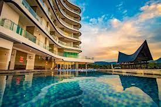
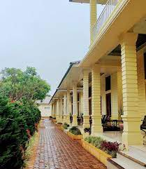
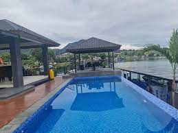
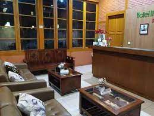
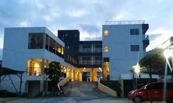
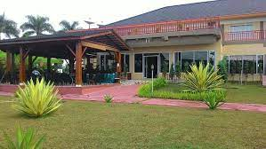

1. Labersa Toba Hotel & Convention Centre
Labersa Toba Hotel & Convention Centre menjadi salah satu hotel Bintang 4 yang siap memberikan pengalaman menginap terbaik di Kota Toba, Tempat nya yang sangat Strategis tepat di Jalan Lintas Raya Pematangsiantar. Dengan layanan Berkelas internasional, dengan berbagai fasilitas mewah. Labersa Toba Hotel memiliki 152 kamar yang terdiri dari berbagai macam tipe , antara lain Superior Room, Deluxe Room, Deluxe Premiere, Junior Suite, Toba Suite, Royal suite , President Suite. Setiap kamar dilengkapi dengan furnitur mewah serta dilengkapi dengan fasilitas tambahan seperti AC, Perlengkapan mandi, Shower air panas, Televisi, Meja Kerja, serta Akses Wifi gratis dan Layanan tambahan seperti layanan laundry & dry cleaning,Resepsionis 24 jam.

2. Sopo Almonsari
Hotel Almonsari adalah tempat bermalam yang tepat bagi Anda yang berlibur bersama keluarga. Nikmati segala fasilitas hiburan untuk Anda dan keluarga. Jika Anda berniat menginap dalam jangka waktu yang lama, Hotel Almonsari adalah pilihan tepat. Berbagai fasilitas yang tersedia dan kualitas pelayanan yang baik akan membuat Anda merasa sedang berada di rumah sendiri. Menikmati perjalanan sendiri adalah hal yang menyenangkan. Untuk menginap, HOTEL ALMONSARI Hotel Almonsari adalah pilihan tepat bagi Anda yang mengutamakan kenyamanan beristirahat tanpa menguras kantong.

3. Purnama Balige Hotel
Hotel ini adalah pilihan tepat bagi Anda dan pasangan yang ingin menikmati liburan romantis. Berbagai fasilitas yang tersedia dan kualitas pelayanan yang baik akan membuat Anda merasa sedang berada di rumah sendiri. Nikmati kualitas layanan terbaik dan pengalaman mengesankan selama menginap, dengan harga terjangkau, namun tetap memberikan pelayanan yang baik. Tersedia kolam renang restoran. Resepsionis siap 24 jam untuk melayani. WiFi tersedia di seluruh area publik properti.Purnama Balige Hotel adalah pilihan tepat bagi Anda yang mengutamakan kenyamanan beristirahat tanpa menguras kantong.
4. Nabasa Hotel
Hotel Nabasa adalah tempat ideal bagi wisatawan yang ingin menjelajahi kota. Hotel Nabasa menawarkan pengalaman menginap yang menyenangkan di Balige bagi mereka yang bepergian untuk bisnis atau liburan. Bandara Silangit merupakan pilihan transportasi utama terdekat, berjarak kurang lebih 18km. Bandara Silangit berjarak sekitar 18 km melalui jalan darat. Berwisata di area ini mudah dilakukan, karena Pusat TB Silalahi (Museum Balige) dan Pantai Lumban Bul-Bul keduanya berada tidak jauh. Di penghujung hari yang sibuk, wisatawan dapat melepas lelah dan bersantai di hotel atau keluar dan menikmati kota.
5. Pondok Berata Dapdap
Semua unit memiliki dapur kecil lengkap agar Anda dapat menyiapkan makanan sendiri. Beberapa unit memiliki teras dan/atau balkon dengan pemandangan pegunungan. Sarapan Asia tersedia setiap pagi di B&B ini. Pondok Berata Dapdap menawarkan fasilitas barbekyu. Area pantai pribadi dapat ditemukan di akomodasi, bersama dengan lounge bersama. Parapat berjarak 65 km dari akomodasi. Akses dari Balige adalah 30 menit dengan perahu. Pasangan paling suka lokasinya mereka memberi nilai 10 untuk perjalanan dua orang.

6. Ita Soposurung Hotel
Terletak di Toba, Hotel Ita Soposurung menawarkan akomodasi dengan akses mudah ke tempat-tempat terbaik di Toba. Properti ini memiliki restoran, WiFi, dan tempat parkir. Kamar dilengkapi dengan AC, TV, dan pembuat kopi-teh. Kamar mandinya dilengkapi dengan shower dan perlengkapan mandi gratis. Anak-anak berusia 5 tahun ke atas akan dianggap sebagai orang dewasa. Harap pastikan bahwa usia anak sesuai dengan informasi yang tercantum pada rincian pemesanan Anda. Jika tidak, Anda mungkin harus membayar biaya tambahan pada saat check-in.

7. Mutiara Balige Hotel
Mutiara Balige Hotel adalah hotel di lokasi yang baik, tepatnya berada di Balige. Resepsionis siap 24 jam untuk melayani proses check-in, check-out dan kebutuhan Anda yang lain. Jangan ragu untuk menghubungi resepsionis, kami siap melayani Anda. WiFi tersedia di seluruh area publik properti untuk membantu Anda tetap terhubung dengan keluarga dan teman. Selain itu, hotel ini juga dekat dengan beberapa tempat yang menyenangkan untuk dikunjungi, seperti : tempat rekreasi, Museum Batak TB Silalahi Center, Smpn 4 Balige. Selain itu, hotel ini menyediakan resepsionis 24 jam, parkir serta wifi. Rasakan sensasi liburan yang berbeda bersama Mutiara Balige Hotel.

8. Sere Nauli Hotel
Sere Nauli Hotel merupakan Hotel sangat asri, sejuk, nyaman dengan area seluas 1,5 hektare berada ditengah hamparan sawah yang indah, berdiri tepat disebelah monumen Raja Partahan Bosi Hutapea Panglima Raja Sisingamangaraja XII lokasi yang strategis pada jalur lintas Sumatera. Disamping fasilitas yang dimiliki oleh Sere Nauli Hotel ini juga didukung dengan pemandangan alam yang begitu indah seperti pegunungan dan akses ke Danau Toba hanya sekitar 10 menit dari lokasi hotel, dekat dengan pasar tradisional dan sekolah Bibelvrouw satu-satunya sekolah penginjilan wanita Batak di Indonesia yang didirikan oleh Misionaris dari Jerman yaitu DR. I. L. Nommensen.